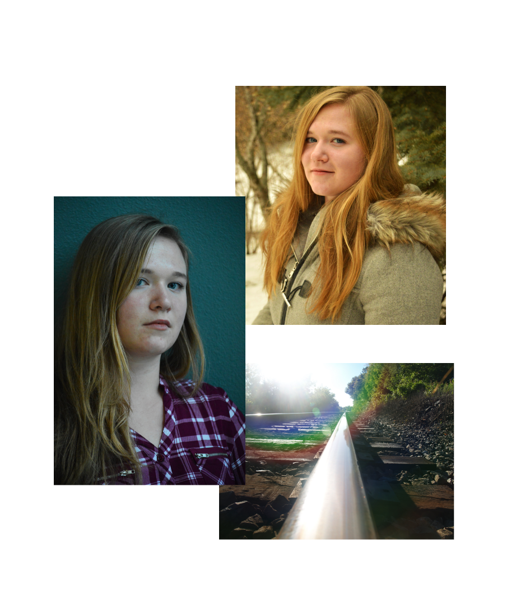

EM2

Website developed for a college project focusing on a made-up entertainment show.
EM2
In a development team of 3, I participated in taking this website from initial design to final product.
My major contributions included the article pages, Music/Movie/Event pages, and the responsiveness of the entire website. I have recently gone in and cleaned up some of the code to make it easier to understand and work more efficently.
Languages Used:
- HTML
- CSS
- PHP
- JavaScript

Back
Airbrowz

Wireframes designed for Airbrowz. Made with a group of 4 for a client project in college.
AIRBROWZ
Airbrowz was a client project that me and 3 others worked on. From the base idea, we created beginning design material (i.e. branding guide, logo, colour scheme) and then moved on to create the wireframes and HTML snippets for the app. We also went through a few rounds of user testing to ensure the app was easy to use and suited for it's target audience.
Tools Used:
- Uxpin.com
- Adobe Illustrator
- Adobe Photoshop
- HTML/CSS

Back
Acme

College project, used to learn SCSS and Bootstrap. Not a real development conference.
ACME
While not a real conference, Acme was a chance for me to get more used to using Bootstrap and learn the ins and outs of SCSS. It's quite a simple website, but I believe it was fundimental to my love of SCSS as a preprocessor.
Designed and developed by me, for a college project.
Languages Used:
- HTML
- CSS/SCSS
- Bootstrap
- JavaScript

Back
Scope

Simple HTML and CSS website design, created to be a Wordpress template.
SCOPE
Yes, this studio might be fake. But the work put into it sure wasn't!
Scope was originally designed to become a Wordpress template, but afterwards I migrated it to a simple website. This is mostly showcasing design ability, though I would like to figure out how to do the ordering thing, and this could be a great place for that!
Languages Used:
- HTML
- CSS

Back
Photography
Macro, Headshots, Landscape and Product Photography
PHOTOGRAPHY
A passion for Photography led me to explore the professional side of it, including headshots and professional product photography.
As a hobby, I enjoy taking Macro and Landscape shots, especially when they showcase the beautiful Canadian countryside!
Camera:
- Nikon D3200

Back
Typographic Art

Psycho typographic art poster.
TYPOGRAPHIC ARTWORK
With UX/UI Design comes Graphic Design, and I've always enjoy manipulating fonts and words into beautiful artwork. This is just a small sample of that, done in college for a project which also included making a typographic video for a clip from the movie.
Tools Used:
- Adobe Illustrator